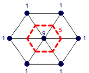
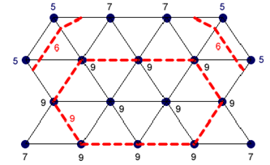

34th ICPC World Finals · Problem F
A contour map represents the topography of a given region. Lines on a contour map represent constant elevations. For example, a contour map might contain a line that represents points with an elevation of 100 meters above mean sea level, another line representing 200 meters elevation, and so on.
The Association for Contour Mapping (ACM) needs a program to produce contour maps from data files containing elevation measurements collected by a satellite. They are especially interested in the total length of all contour lines on each map. The elevation data is in the form of sequences of integers that represent elevations measured at regular intervals along scan lines that run from west to east. The spacing of the scan lines is such that each elevation measurement in the interior of the data set has six nearest neighbors and is equidistant from them (when elevation is ignored), as shown in Figure 5 and Figure 6.


The policy of the ACM is to approximate the actual terrain by a set of triangles constructed by connecting each elevation measurement to its nearest neighbors by straight line segments. Each of these triangles is then treated as a planar surface, where the plane is determined by the coordinates, including elevation, of the vertices. If the triangles are projected onto the zero-elevation plane, they form a set of equilateral triangles.
In the figures above, the black numbers represent elevation data and the red dashed lines and numbers represent contour lines. Figure 5 contains a single contour line at elevation 5. Figure 6 contains multiple contour lines at elevations 6 and 9. A contour line may pass through the interior of a triangle or run along an edge of a triangle.
Because of the way the data points are interlaced, even-numbered scan lines contain one more data point than odd-numbered scan lines. In each figure, the first scan line is shown at the top.
The input consists of several test cases, each containing a set of elevation data. Each test case begins with a line containing four integers as follows:
The first line of each test case is followed by additional lines containing elevation data as a sequence of non- negative integers no larger than 106. The first p integers represent the elevation measurements on the first scan line, from left to right. The next p + 1 integers represent the elevation measurements on the second scan line, reading from left to right. The data continues in order, providing p integers for each odd-numbered scan line and p + 1 integers for each even-numbered scan line, until all the elevation data has been provided. Each test case ends with an empty line.
The input is terminated with a line containing a single zero.
For each test case, display its case number followed by the total length of all the contour lines on the contour map, rounded to the nearest integer. Follow the format of the sample output.
3 2 5 5 1 1 1 9 1 1 1 4 4 5 3 5 7 7 5 5 9 9 9 5 9 9 9 9 7 9 9 9 7 0
Case 1: 15 Case 2: 54